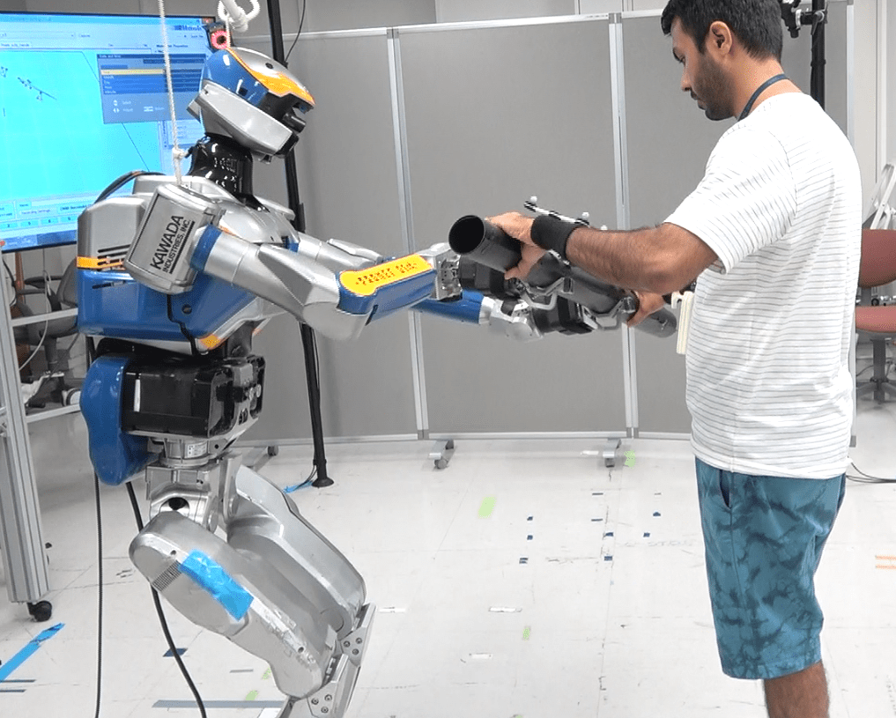

Projects during PhD
view presentation
Projects undertaken at AIST-CNRS-JRL, Japan
- Whole-body handover framework
Designed an intuitive bi-directional object handover framework between human and biped humanoid robot co-worker using whole-body control and locomotion. The designed models were able to predict and estimate the handover position in advance along with estimating the grasp configuration of an object and active human hand during the handover trials. This framework also focused on designing a model to minimize the interaction forces during the handover of an unknown mass object along with the timing of the object handover routine. This framework mainly focused on three important key features during the human humanoid robot object handover routine —the timing(s) of handover, the pose of handover and the magnitude of the interaction forces between human hand(s) and humanoid robot end-effector(s). Basically following questions were answered, — when (timing), where (position in space), and how (orientation and interaction forces) of the handover.

- Distinct motor-contagions
This and below studies were related to the behavioural effects of motor contagions and motivated by the ‘implicit’ social interactions between human and humanoid co-workers. We examined an empirical repetitive industrial task in which a human participant and a humanoid co-worker worked near each other. Primarily a cyclic and repetitive pick-n-place task was chosen for the experiments, as we wanted a task that is simple but rich and could represent several industrial co-worker scenarios.
Our results and findings suggest that on-line contagions affect participant's movement frequency while the off-line contagions affect their movement velocity. Also off-line motor contagions were mainly notable after observing human co-worker, but the effects of on-line contagions were equal with both human and humanoid co-workers. Therefore, perhaps the off-line contagion is more sensitive to the nature of the co-worker. These two contagions were also observed to be sensitive to the behavioural features of both co-workers, but with robot co-worker, these motor contagions were induced only when robot movements were biological. Finally, the overall observations made in this project emphasize on our hypothesis that distinct motor contagions are induced in human participant's during the observation of a co-worker (on-line contagions) and as well as after the observations of same co-worker (off-line contagions).
- More than just co-workers
We further explored our findings from previous study and under the same experimental task and set up along with the addition of a few more conditions. Our findings suggest that the presence of a humanoid (or a human) co-worker can influence the performance frequencies of human participants. We observed that participants become slower with a slower co-worker, but also faster with a faster co-worker. We measured the performance considering both task speed (or frequency) as well as task accuracy. We showed how touch accuracy of participants have changed alongside the contagions in their performance frequency during the task. We also investigated the effects of physical form where both human and robot co-worker's head and torso were covered, and human participants were only able to see visible moving arm of the co-worker. Our findings suggest that the presence of a humanoid co-worker can affect human performance, but only when its humanoid form is visible. Moreover, this effect was supposedly increased with the human participants having prior robot experience.
Projects during Masters
Projects undertaken at Puli Space, Hungary
- Puli Rover Localization and Mapping
A SLAM based simulation environment was designed to enable Puli rover operates autonomously and finish the required task in case manual control fails. As the rover moves and update its position based on the information it gains of environment and location of landmarks, it tries to follow the actual path, although as it moves further, it determines changes in the position of landmarks and therefore it deflects from the actual path, but the difference between the estimated (blue) and actual path (cyan) is minimum and rover manages to reach destination. After the localization and mapping is finished, the landmarks positions are updated again based on the rover’s estimation.

- Live Depth estimation and Navigation
This project involved stereo image calibration and rectification, using a disparity map of the pixel points in each image, 3-D scenes were reconstructed of the environment. Later estimated depth of an object from the live video stream was obtained to move rover towards the object.

- Rad-Hard
This project was focused on the electonics aspect of Puli rover. Sole purpose of this experiment was to test and investigate the industrially available commercial electronic components mainly such as micro-controllers, motor drivers etc. under the moon like radiation environment on artificial earth laboratories. Below module was designed and fabricated to test under extreme gamma radation environment at Institute for Nuclear Research (MTA ATOMKI) in Debrecen, Hungary.

Projects undertaken at Warsaw University of Technology (WUT), Poland
- SEEKUR Jr. TERABOT Trajectory Generation
Completed a group project on the trajectory generation of SEEKUR Jr. TERABOT S. Results were obtained both mathematically (kinematics) and using matlab Simulink, also different motion trajectories were obtained for its 5DOF manipulator.

- ButterBot
A project was started to design a biologically inspired aerial-land vehicle. Aim of this project was to develop efficient design of butterfly inspired robot for surveillance, search and rescue operations and in other real life applications.

Projects undertaken at Flanders Make, Belgium
- 2-D Badminton playing Robot Trajectory Estimation
Goal of this internship was to evaluate the MEMS IMU and feasibility study of trajectory estimation based on IMU signals for 2-D badminton playing robot. Ultra wide band ubisense were used for reference trajectories.
Projects during Bachelors
Projects undertaken at TIFAC-CORE (R&D Govt. of India)
- Universal Gateway
A project work was initiated into the implementation of UNIVERSAL GATEWAY with the objective to develop a single platform for common communication between different protocols LIN, CAN, FlexRay and MOST.

- Media Oriented System Transport (MOST)
Successfully completed an internship on hardware implementation of MOST25 protocol with MOST demo tools. This project shows the design and implementation of an in-lab in-car infotainment system, which uses the MOST field bus as a backbone. The infotainment system was built around two INIC Evaluation Platforms directly interfaced with individual PCs also in conjunction with MOST Amplifier and DVD Player4 MOST, etc.

- Multi-Node Controller Area Network (CAN)
A project completed on 3 NODE communication using CAN protocol which involves the control of one node’s sensors, ECUs such as body electronics in conjunction with powertrain and chassis from another node and vice-versa depending on priorities. Safety electronic: parking brake, powertrain electronics motor control.
- Local Interconnect Network (LIN)
Completed a project on LIN PROTOCOL in order to test the capabilities of master-slave, time triggered protocol and because its low speed, LIN was used in on-off devices such as car seats, door locks, door mirrors, rain sensors and sunroofs, steering wheel, wiper, radio, roof top, rain sensor etc among the central ECU.
Projects undertaken at Vellore Institute of Technology (VIT), India
- OFDMA/CDMA based Hybrid Multiple Access
Completed final year project on OFDMA/CDMA based hybrid multiple access. In this project a new hybrid multiple access technique was developed with the combined advantages of both OFDMA and WCDMA technologies.

- All Terrain Vehicle
Worked for SAE MINI BAJA India 2011 and developed an electrical & electronics system such as the dashboard, speedometer, emergency switching etc. of a real time all-terrain vehicle.

- Micromouse
Develop a working model of MICROMOUSE as the part of academic curriculum. Robot was equipped with the array of IR sensors and was able to tackle most practical problems encountered in real situations.

- BalBot
Developed a balancing robot using MEMS accelerometer sensor under AT SOLUTIONS, which balance itself with two wheels by measuring the acceleration across all three xyz axis.

- SmartCar
Develop a RF WIRELESS SYSTEM using ASK modulation based Rx-Tx module at a frequency of 433MHZ and was used during the development of wireless mobile robot.

- TrackBot
A project work was carried out to develop a robot (object follower) using computer vision in order to follow an object such as a ball of its initial location.